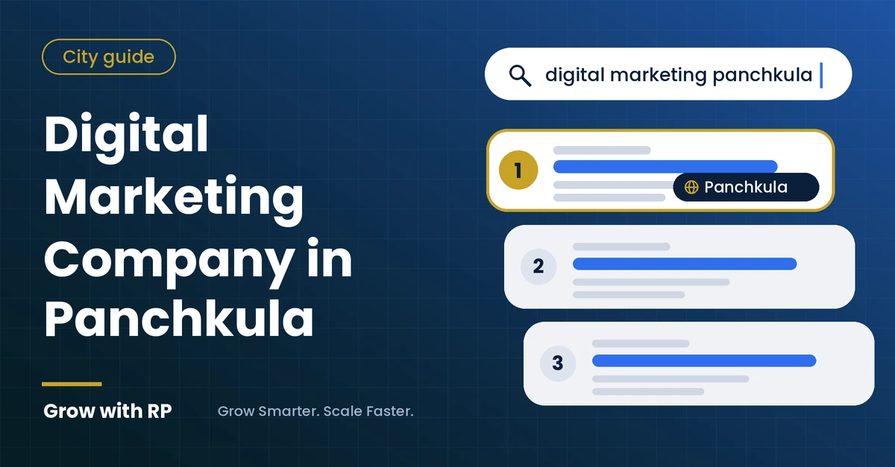

Your next customer is probably searching on a phone right now. If your business is not on page one, a rival gets that call. A good digital marketing company in Panchkula fixes this. It helps people find you, trust you, and contact you.
This guide explains what to expect from a digital marketing agency in Panchkula, how an SEO company in Panchkula works, and how to choose the right partner. It uses plain words and fresh 2026 data.
Why Panchkula Businesses Need Digital Marketing in 2026
More people are online than ever, and they buy online too.
- India had 1,114.17 million internet subscribers at the end of June 2026, according to TRAI.
- Digital now holds about 60% of India's ad spend, and the Pitch Madison report expects 64% in 2026.
- Small business digital ad spend grew 21% in 2025, to ₹35,814 crore, in the same report.
The lesson is simple. Your buyers are online, and your rivals are already spending there. Online marketing is no longer a bonus. It is the main road to new customers.
What Digital Marketing Services in Panchkula Should Include
Good digital marketing services in Panchkula work as one plan, not as random tasks. Look for these parts:
- SEO: Brings free, steady visitors from Google.
- Social media marketing: Builds trust and keeps your brand in front of people.
- Paid ads: Brings fast leads while SEO grows.
- Website design and development: Turns visitors into callers and buyers.
- Content and email: Answers questions and keeps past customers close.
- Reports: Shows calls, leads, and sales, not just clicks.
An online marketing company in Panchkula that cannot explain these parts in plain words is a warning sign.
How an SEO Company in Panchkula Gets You Found
An SEO company in Panchkula helps your website rank higher on Google. Better rank means more visits, calls, and sales. Real SEO services in Panchkula follow these steps:
- Audit: Check your site for speed, errors, and missing pages.
- Keyword research: Find what your buyers type into Google.
- On-page work: Fix titles, headings, text, and images.
- Content: Publish helpful pages and blog posts.
- Links and listings: Earn trust from other trusted sites.
- Tracking: Share rank, traffic, and lead reports each month.
An SEO agency in Panchkula should also tell you the truth about time. SEO is not instant. Most sites need a few months before the growth shows.
New: AI SEO from Grow with RP
Search is changing fast, and AI answers now sit above many Google results. Grow with RP now offers AI SEO. The team shapes your pages so Google AI Overviews and AI tools can find, trust, and cite your brand. That means more visibility, even when fewer people click.
Why Local SEO Services in Panchkula Matter Most
Most of your customers live close by. Local SEO services in Panchkula help you win those nearby buyers.
- 46% of people always or often add "near me" to local searches (BrightLocal).
- 73% of local searches start on a mobile phone (BrightLocal, 2026).
- 97% of people read reviews for local businesses (BrightLocal, 2026).
So a complete Google Business Profile, fresh reviews, and the same name, address, and phone number everywhere will help you. People who type "digital marketing company near me" want an answer right now. Be the one they find.
Social Media Marketing and Meta Ads
Short videos are now a daily habit in India. About 588 million people, or 61% of internet users, watched short video in 2025, says the IAMAI and Kantar report.
A social media marketing agency in Panchkula plans posts, reels, and replies that fit your brand. A Meta ads agency in Panchkula runs paid ads on Facebook and Instagram. These ads reach people by area, age, and interest, so you do not waste money on the wrong crowd.
Good ads and good posts work together. Posts build trust. Ads bring quick leads.
Website Design Company in Panchkula: Speed Wins
Your website is your digital shop. If it loads slowly, people leave before they see your offer.
- 53% of mobile visitors leave a site that takes more than 3 seconds to load (Google).
- Mobile makes up about 59% of web traffic (HTTP Archive, September 2026).
A strong website design company in Panchkula builds pages that are fast, clear, and easy on a small screen. A skilled website development company in Panchkula also adds simple forms, click-to-call buttons, and clean code that search engines can read.
How to Choose the Best Digital Marketing Agency in Panchkula
Use this short checklist before you sign anything:
- Clear goals: They ask about your sales targets first.
- Honest promises: No one can promise rank one in a week.
- Real reports: You get monthly numbers you can understand.
- Full skills: SEO, ads, social media, and web design under one roof.
- Fair pricing: Look for an affordable digital marketing agency in Panchkula, but do not pick on price alone. Ask what you get for each rupee.
- Easy contact: You can reach a real person when you need help.
The best digital marketing agency in Panchkula is the one that grows your leads and tells you the truth.
Grow with RP: A Digital Marketing Company in India for Panchkula Brands
Grow with RP is a digital marketing company in India that serves businesses in Panchkula. The team offers SEO, social media marketing, Meta ads, website design, and website development. Each plan starts with your goal, your customers, and your budget. Then it moves to clear work and clear reports.
Want to know where your website stands today? Contact Grow with RP for a simple review and a plan that fits your business.
FAQs: Digital Marketing and SEO in Panchkula (2026)
What does a digital marketing company in Panchkula do?
A digital marketing company in Panchkula helps local businesses get leads online. It runs SEO, social media, ads, and website work. With digital now near 64% of India's ad spend in 2026 (Pitch Madison), this work reaches most of your buyers.
How is an SEO company in Panchkula different from a digital marketing agency in Panchkula?
An SEO company focuses on free Google rank. A digital marketing agency covers SEO plus ads, social media, and web design. Many brands pick one team for all of it, so every channel shares one plan.
How long do SEO services in Panchkula take to show results?
Most sites need a few months of steady work before rank and leads grow. Speed depends on your site, your rivals, and your content. Be careful with anyone who promises page one in days.
How much do digital marketing services in Panchkula cost?
Cost depends on your goals, your market, and how many channels you use. Ask each agency for a written scope and monthly report. An affordable agency should show what each rupee buys.
Why are local SEO services in Panchkula worth it?
Local buyers search close to home. About 46% of consumers often add "near me" to searches, and 73% of local searches start on mobile (BrightLocal). Local SEO puts your business in front of them.
Do I need a social media marketing agency in Panchkula?
If your buyers use Instagram, Facebook, or YouTube, yes. About 61% of Indian internet users watched short video in 2025 (IAMAI and Kantar). A social media marketing agency plans content that fits that habit.
When should I hire a Meta ads agency in Panchkula?
Hire one when you want leads fast, such as for a sale or a new service. Meta ads reach people by area and interest. Use them with SEO, so you get quick leads now and steady growth later.
What makes a good website design company in Panchkula?
Speed, clean design, and mobile-first pages. Google data shows 53% of mobile visitors leave if a page takes over 3 seconds to load. A good website development company tests speed before launch.
How do I pick the best digital marketing agency in Panchkula?
Check real reports, honest promises, and clear pricing. Ask how they track calls and leads. Pick the team that explains its plan in simple words.
Does AI search change SEO in 2026?
Yes, but SEO still matters. Google holds about 90% of global search share (StatCounter). When an AI summary shows up, the top result's click rate drops by about 34.5% on average (Ahrefs). So clear, trusted, helpful content matters more than ever.
Final Thoughts
Growth online comes from a clear plan, steady work, and honest reports. Choose a digital marketing company in Panchkula that fits your goals, and an SEO company in Panchkula that explains each step. To talk to a digital marketing company in India built for local brands, reach out to Grow with RP today.
Sources
- India's internet users cross 1.11 billion in June 2026, TRAI
- India's Ad Market Hits ₹1.55 Lakh Crore: Digital Now 60%, Pitch Madison Advertising Report 2026
- India's ad economy crosses digital milestone, 64% share projected for 2026, Exchange4media
- India's internet user base crosses 950 million in 2025, IAMAI and Kantar
- Local SEO Statistics, BrightLocal
- Local Consumer Review Survey 2026, BrightLocal
- SEO Statistics for 2026, Ahrefs
- Site Speed Statistics 2026, Colorlib (HTTP Archive data)
- Website Speed and Performance Statistics 2026, Searchlab (Google mobile speed study)
Get a Free Consultation
Tell us about your business and we will suggest a plan that fits.
Talk to Grow with RP